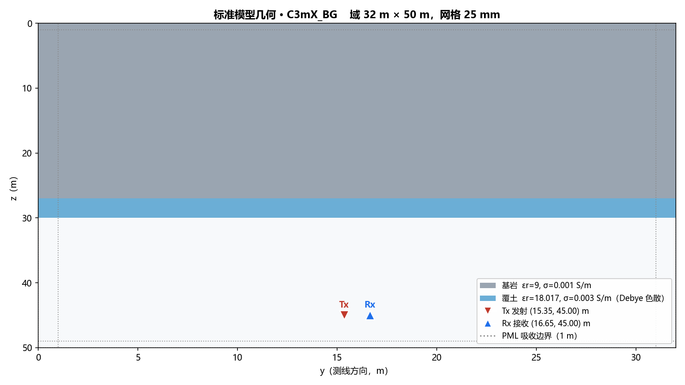
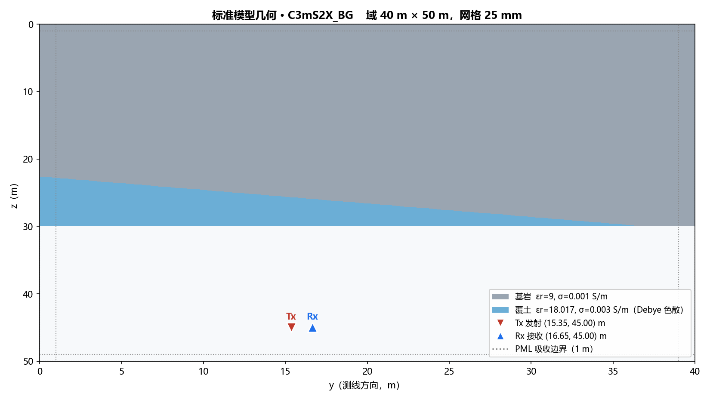
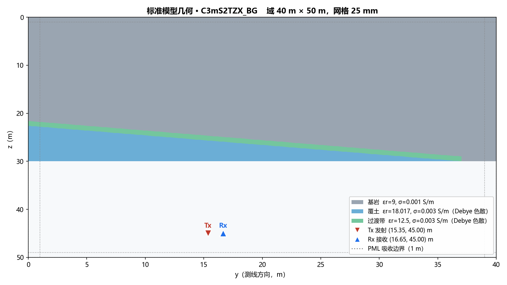
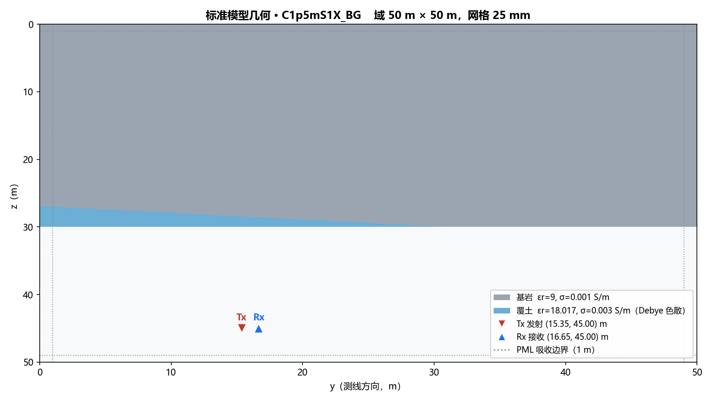
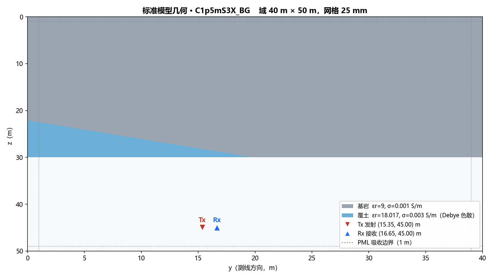
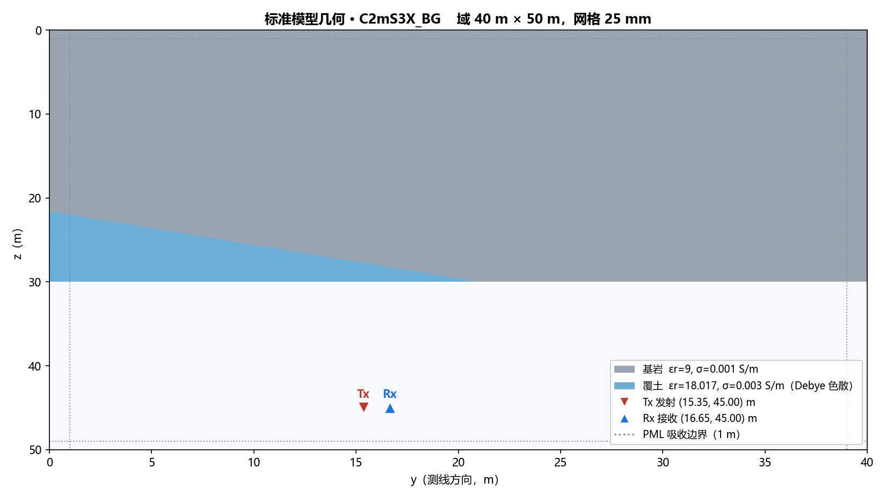
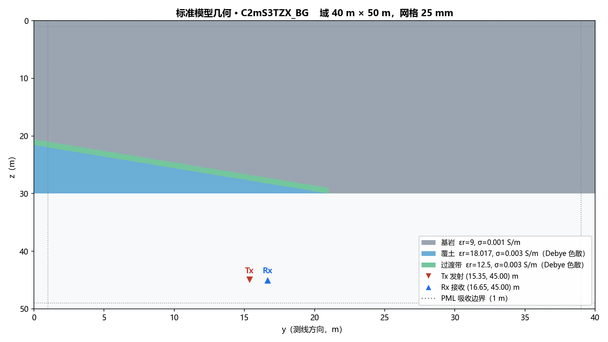

C1mX_BG
平地 · 覆土 1 m · 无目标背景
C3mX_BG
平地 · 覆土 3 m · 无目标背景

C3mS2X_BG
坡地（阶梯 0.25 m/格）· 覆土 3 m · 无目标背景

C3mS2TZX_BG
坡地 + 过渡带（TZ，εr=12.5 半强度色散）· 覆土 3 m · 无目标背景

C1p5mS1X_BG
B 层缓坡（S1X）· 覆土 1.5 m（天线处）· 无目标背景

C1p5mS3X_BG
B 层陡坡（S3X）· 覆土 1.5 m（天线处）· 无目标背景

C2mS3X_BG
B 层陡坡（S3X）· 覆土 2 m（天线处）· 无目标背景

C2mS3TZX_BG
B 层陡坡 + 过渡带（TZ）· 覆土 2 m · 无目标背景
